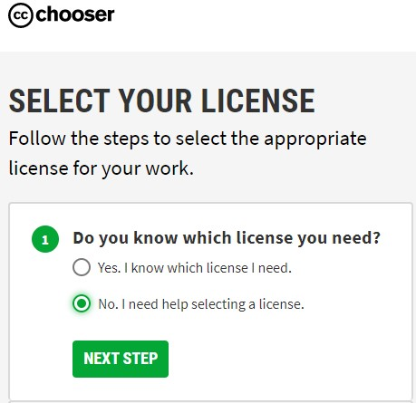
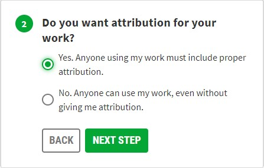
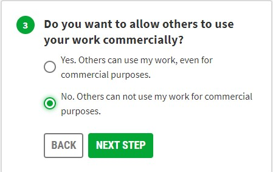
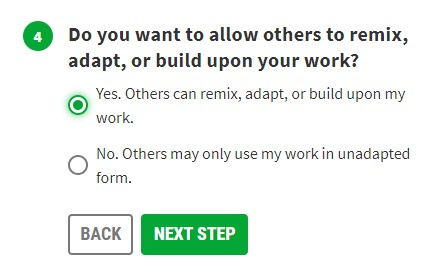
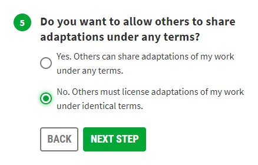
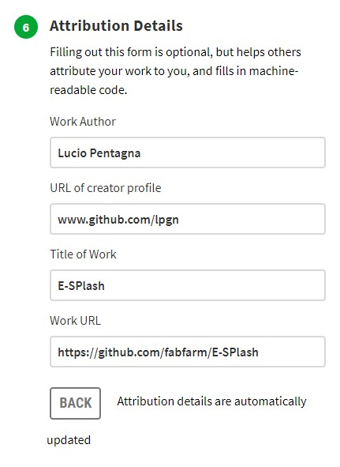
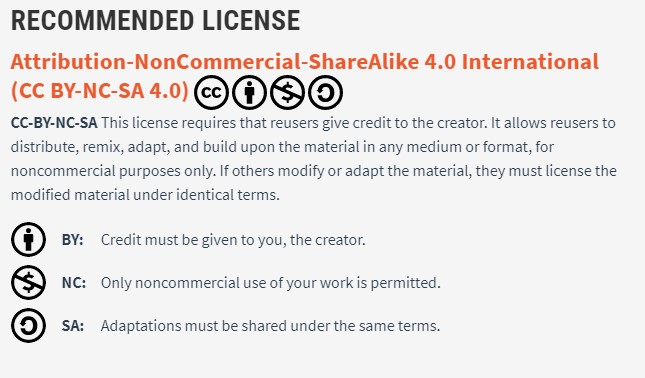
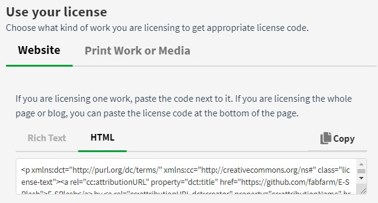

Invention, Intellectual Property and Business Models
Individual Project
- Develop a plan for dissemination of your final project.
- Prepare drafts of your summary slide (presentation.png, 1920x1080) and video clip (presentation.mp4, 1080p HTML5, smaller than a minute, smaller than 10 MB) and put them in your root directory
Learning outcomes:
- Formulate future opportunities
Have you?
- Outlined future possibilities and described how to make them probabilities
- Prepared a draft summary slide and video
Dissemination Plan of Final Project
The reason I started my project was to simply fill a need to have a irrigation system on my fabfarm and at the same time learn with it.
I have designed and made a huge amount of machines in the past but I never worked/designed from scratch the electronics and software that powered my machines, I only modified/hacked them, so I always relied on the open-source projects of others like the Marlin firmware or Grbl firmware or the Printrboard.With this project I left my comfort zone and went deep into the electronics and firmware creating a board from scratch and developing a firmware with my current needs and some flexibility for expansion, I fill that my goals are fully fulfilled.
With that said as of now there is no intent on making it commercial as there is many options already in the market like I referenced in the Applications and Implications week, in the other hand I welcome contributions to its improvement and for that reason it is already on its Github page, my project can also be found here in these pages for anyone to learn or use it.
License
As previously mentioned, I wish to make my work freely available so that other people can use or learn from it.
In order to help me decide on which license to use I went into the Creative Commons page where they host a wizard to guide you into choosing a license and then went in to their beta page to initiate the process of choosing a license.
In this step I initiate the process of getting help to chose a license by selecting the second option.

Then chose the option that keeps the atribute of the work.

I chose here to have a non commercial license this means anyone with a commercial project will need to ask for permission to use my work.

I chose here to allow changes to my work.

I chose there that the adapted works be shared with identical terms to my initial license.

Here I fill in the attributes of my license.

Next the site makes a recommendation of the license in my case it is a Attribution-NonCommercial-ShareAlike.

The site will also give me some options to copy text or html that I can than paste into my site or product information depending on the case chosen.

I then copied the content of the HTML to the license file, changing automatically the footer of this website as its linked via the CSS, and updated my new license to the project's github page.
Presentation Slide